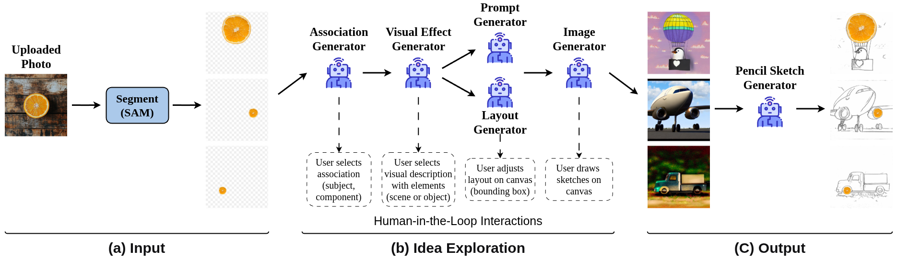
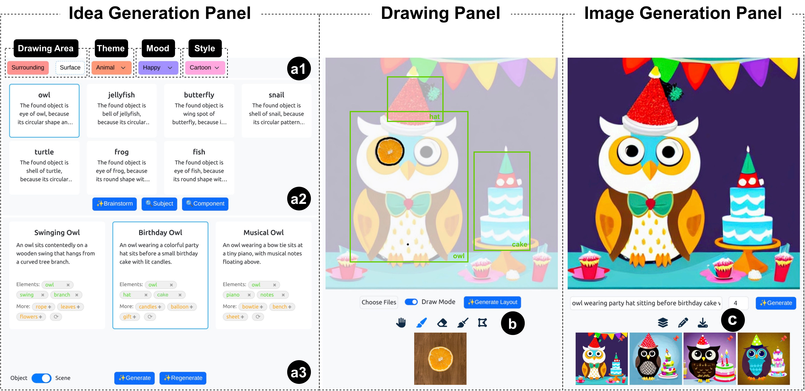

GenFODrawing: Supporting Creative Found Object Drawing with Generative AI
Abstract
Found object drawing is a creative art form incorporating everyday objects into imaginative images, offering a refreshing and unique way to express ideas. However, for many people, creating this type of work can be challenging due to difficulties in generating creative ideas and finding suitable reference images to help translate their ideas onto paper. Based on the findings of a formative study, we propose GenFODrawing, a creativity support tool to help users create diverse found object drawings. Our system provides AI-driven textual and visual inspirations, and enhances controllability through sketch-based and box-conditioned image generation, enabling users to create personalized outputs. We conducted a user study with twelve participants to compare GenFODrawing to a baseline condition where the participants completed the creative tasks using their own desired approaches without access to our system. The study demonstrated that GenFODrawing enabled easier exploration of diverse ideas, greater agency and control through the creative process, and higher creativity support compared to the baseline. A further open-ended study demonstrated the system's usability and expressiveness, and all participants found the creative process engaging.
Framework
The GenFODrawing framework consists of three stages: (a) Input, where users upload a photo and select a found object through segmentation. (b) Idea Exploration, where the system leverages a series of generative modules (association generator, visual effect generator, layout generator, prompt generator, and image generator) to collaboratively generate creative visual references. During this stage, users actively guide the process by selecting associations, refining visual descriptions, adjusting layout compositions, and adding sketches. This human-in-the-loop workflow ensures that the generated references align with user intent. The dashed labels below indicate the user-guided decision points. (c) Output, where the final reference image is converted into a pencil sketch with the overlaid found object, supporting users in manual drawing.
User Interface
The user interface of GenFODrawing consists of three panels: the idea generation panel providing (a1) user-specified options, (a2) association recommendations, and (a3) visual description recommendations; the drawing panel offering a canvas and (b) several tools for found object selection, manipulation, sketch creation, and contour extraction; and the image generation panel featuring a main canvas displaying generated reference images, a gallery of generation results, and (c) functional buttons to overlay found objects onto reference images and convert results to pencil sketches for previewing final outcomes.
Experiments
The figure shows some results created by P12 (a), P3 (b), P4 (c), P6 (d) using GenFODrawing in the comparative study. The first and third columns show the input sketches along with the specified bounding boxes, while the second and fourth columns show the system's outputs, with the found object overlaid on the images.
The figure shows part of the creative process for P1 and P8 under both the baseline (ChatGPT) and our system conditions in the comparative study. Due to space limitations, only excerpts of the ChatGPT conversation are shown. When using ChatGPT, participants engaged in a linear, prompt-by-prompt exploration, repeatedly revising prompts to approach their desired outcomes. The outputs were unpredictable and often misaligned with users' creative intent, requiring extra effort and imagination to adapt the results. In contrast, our system guides users through a structured exploration and enables more controllable image generation, making it easier to explore different ideas and achieve their creative goals.
The statistical results of CSI and controllability questionnaires. (*: p < 0.05 and **: p < 0.01).
Distribution of NASA-TLX scores across all six items. Lower scores indicate better perceived user experiences. The complete questions are provided in the supplementary materials.
Distribution of SUS scores across all ten items. Each label represents a key summary of the corresponding SUS question. Higher scores indicate better perceived user experiences. The complete questions are provided in the supplementary materials.
Gallery
BibTeX
@article{leng2025genfodrawing,
title={GenFODrawing: Supporting Creative Found Object Drawing with Generative AI},
author={Jiaye Leng and Hui Ye and Pengfei Xu and Miu-Ling Lam and Hongbo Fu},
journal={IEEE Transactions on Visualization and Computer Graphics (TVCG)},
year={2025},
url={https://jiayeleng.github.io/GenFODrawing.html}
}